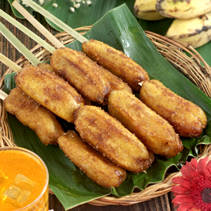
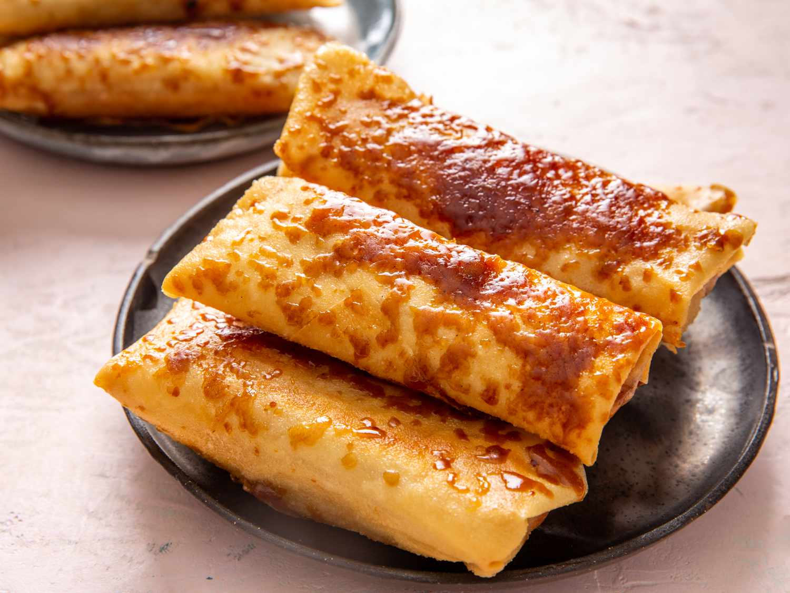
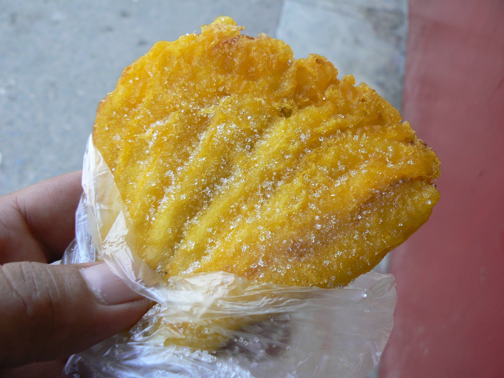
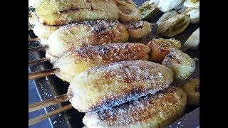

Banana-based snacks in Surigao del Sur are popular street foods made from locally grown saba bananas, which are known for their natural sweetness and firm texture. These snacks include banana cue, turon, banana chips, maruya, and ginanggang, each prepared using different cooking methods such as frying or grilling. Banana cue is coated in caramelized sugar, while turon is wrapped in a crispy wrapper with optional jackfruit filling. Banana chips are thin and crunchy, while maruya is soft and coated with batter, creating a slightly fluffy texture. Ginanggang, on the other hand, is grilled and brushed with margarine and sugar, giving it a smoky and sweet flavor.
These snacks are commonly sold in local markets, roadside stalls, and coastal towns across Surigao del Sur. They are affordable and widely enjoyed by locals as everyday merienda or quick snacks. Each variation highlights the versatility of bananas in Filipino cuisine. The combination of simple ingredients and different preparation methods creates a variety of flavors and textures. Visitors often enjoy trying all types to experience the diversity of local food. Overall, banana-based snacks represent an important part of the region’s food culture.
Banana-based snacks originated from the Philippines’ long history of banana cultivation. Bananas have been a staple crop in the country for centuries, providing a reliable source of food. Early Filipinos developed various ways to prepare and preserve bananas. These methods evolved into the snacks commonly enjoyed today. Each region developed its own variations based on local preferences.
In Surigao del Sur, banana-based snacks became popular due to the availability of fresh bananas. They are commonly sold in markets, roadside stalls, and small eateries. The snacks have become part of everyday life and local tradition. Over time, they gained popularity among tourists seeking authentic Filipino treats. Today, they are recognized as a symbol of local culinary creativity.
Ingredients : Ripe saba bananas, brown sugar, cooking oil, and bamboo skewers are used to prepare banana cue.
Instructions : Fry the bananas in hot oil until slightly golden. Add brown sugar and allow it to melt and coat the bananas. Turn them until fully caramelized. Remove from oil and place on skewers. Serve warm.


Ingredients : Saba bananas, lumpia wrappers, brown sugar, cooking oil, and optional jackfruit are used.
Instructions : Place banana and sugar on a wrapper, then roll tightly. Seal the edges and fry in hot oil until golden brown. Add sugar to caramelize the wrapper. Remove and drain excess oil. Serve hot.
Ingredients : Ripe bananas, flour, eggs, milk, sugar, and cooking oil are used.
Instructions : Mash bananas and mix with batter ingredients. Scoop mixture into hot oil. Fry until golden brown on both sides. Remove and drain oil. Sprinkle sugar and serve warm.


Ingredients : Saba bananas, margarine or butter, sugar, and bamboo sticks are used.
Instructions : Peel bananas and place on skewers. Grill over charcoal until lightly charred. Brush with margarine and sprinkle sugar. Continue grilling until cooked through. Serve warm.